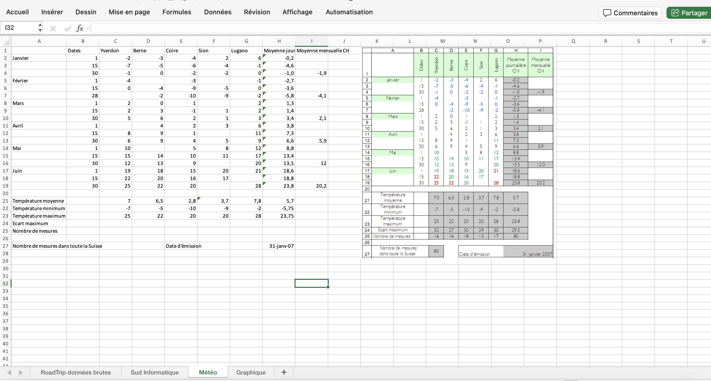

Janvier 2026
Passionnée par l’esthétique depuis mon plus jeune âge, j’ai toujours été fascinée par l’univers de la beauté et du soin. Créative, minutieuse et à l’écoute, j’aime prendre le temps de comprendre les attentes de chaque personne afin de proposer des prestations adaptées et de qualité.
Sérieuse, organisée et motivée, je prépare actuellement un BUT Techniques de Commercialisation afin d’acquérir les compétences nécessaires pour gérer mon futur salon esthétique avec professionnalisme. Cette formation me permet de développer des compétences en gestion, en relation client et en communication, essentielles pour mener à bien mon projet.
Mon ambition est d’ouvrir un salon esthétique spécialisé dans le maquillage permanent et les soins du visage, où chaque cliente pourra se sentir en confiance, écoutée et mise en valeur. Je souhaite créer un espace chaleureux, alliant expertise, bien-être et passion pour la beauté.


La réalisation de tableaux Excel m’a permis de développer des compétences essentielles en BUT Techniques de Commercialisation. Cet outil m’a aidée à organiser, analyser et synthétiser des données chiffrées, notamment dans le cadre de budgets, de tableaux de bord et d’analyses commerciales. Grâce à Excel, j’ai renforcé ma rigueur, ma logique et ma capacité à interpréter des résultats, des compétences indispensables pour la prise de décision et le suivi de la performance en entreprise.

La réalisation d’une étiquette de bière avec Canva m’a permis de développer des compétences en communication et en marketing visuel. J’ai appris à traduire une identité de marque à travers le choix des couleurs, des typographies et des visuels, tout en respectant un positionnement produit. Ce travail m’a également sensibilisée à l’importance du packaging dans l’attractivité d’un produit et dans l’acte d’achat, des notions clés en Techniques de Commercialisation.

Le stage de deux semaines m’a permis de découvrir concrètement le fonctionnement d’une structure professionnelle et de mettre en pratique les notions vues en cours. Cette expérience m’a aidée à développer des compétences en relation client, en organisation et en adaptation au monde du travail. Elle m’a également permis de mieux comprendre les attentes de l’entreprise et de confirmer mon intérêt pour les métiers du commerce et de la communication.

Le travail de groupe portant sur le diagnostic de la gestion de la relation client chez Générale d’Optique m’a permis de développer des compétences en analyse commerciale et en travail collaboratif. J’ai appris à étudier les pratiques de fidélisation, le parcours client et les outils de relation client utilisés par l’enseigne. Ce projet m’a également permis de renforcer mon esprit d’analyse, ma capacité à formuler des recommandations et à travailler efficacement en équipe, des compétences essentielles en Techniques de Commercialisation.

La réalisation d’un site web en HTML m’a permis de développer des compétences numériques et une meilleure compréhension des bases du web. Ce projet m’a aidée à structurer des contenus, à organiser l’information de manière claire et à réfléchir à l’expérience utilisateur. Il m’a également permis de gagner en autonomie, en logique et en rigueur, tout en comprenant l’importance d’un site web comme outil de communication et de valorisation d’une entreprise en Techniques de Commercialisation.

Le voyage que j’ai effectué à New York m’a permis de pratiquer l’anglais au quotidien, notamment à l’oral. Être immergée dans un environnement anglophone m’a aidée à gagner en aisance, à améliorer ma compréhension et à prendre davantage confiance lorsque je m’exprime en anglais. Cette expérience a été très enrichissante, à la fois sur le plan linguistique et culturel.